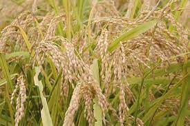

FACTS
SLEX or South Luzon Expressway ang nagkokonekta sa NCR at CALABARZON.

Ang Batangas ay kilala sa kakaiba ang magagandang beach resorts nito.
Ang Kapeng Barako ay matatagpuan sa ibat ibang probinsya pero ito ay nagmula sa probinsya ng Batangas kung kaya ang mga Batangueño ay kalimitang tinatawag na mga Barako.
Ang probinsya ng Quezon ay kilala sa mga kabundukan nito kaya naman karamihan sa mga taga Quezon ay pagmimina ang pinagkukunan ng kanilang pinagkakakitaan.
There are 3 national heroes of the Philippines that were born in CALABARZON. These national heroes are: Jose Rizal - Calamba, Laguna Emilio Aguinaldo - Kawit, Cavite Apolinarion Mabini - Tanauan, Batangas

Lalawigan ng Cavite
Kilala ang Cavite sa pagiging hometown ng mga pambansang sinaunang Pilipino tulad ni dating Pangulong Emilio Aguinaldo. Ang lalawigan ay tahanan din ng napakaraming magagandang atraksyon, hindi lamang mga makasaysayang lugar.
PANGKABUHAYAN
Pangingisda ang pangunahing pinagkukunan ng kita sa mga bayan sa lalawigan. Ganun din ang pagsasaka ang isang hanapbuhay na sikat sa lalawigan ng Cavite.
Mga Prutas
- Pinya
- Saging

Mga Pananim
-

- Mais
- Niyog
- Palay

PRODUKTO SA CAVITE
- Karneng Baboy
- Karneng Baka
IMPRASTRAKTURA SA CAVITE
Maraming nakatayo ng imprastraktura sa lalawigan kagaya ng mga sumusunod:
- Sangley Point International Airport (SPIA)
- Cavite-Tagaytay-Batangas Expressway (CBTEX)
- Bataan-Cavite Interlink Bridge
- LRT-1 Cavite Extension
- Cavite Laguna Expressway
Gallery
IMPRASTRAKTURA NG CAVITE


Lalawigan ng Laguna
Ang Laguna ay may malawak na taniman ng palay. Ang International Rice Research Institute (IRRI) na pangunahing sentro ng pananaliksik sa palay sa Timog. Kilala ang Laguna sa natatangi nitong Talon ng Pagsanjan, ang Unibersidad ng Pilipinas (UP) sa Los Banos, and mga papier mache na nilikha ng mga taga Paete, at iba’t ibang pagdiriwang. Kilala rin ang Laguna sa mga natatangi nitong anyong lupa at tubig.
PANGKABUHAYAN SA LAGUNA
Ang Laguna ay may 60,624 ektarya ng lupa, na may 41,253 ektarya o 23.44% ng kabuuang lawak ng lupa. Noong 2002, 38,445 na mga bukid ang nasa Laguna. Ang mga pangunahing pananim na itinanim sa Laguna ay kinabibilangan ng bigas, mais, niyog, mangga, at saging. Sagana din ang robusta kape, pinya, lanzones, rambutan, at tubo. Ang agrikultura sa Laguna ay nailalarawan sa pamamagitan ng isang malaking lugar na 30,619 ektarya (306.19 km2), na may 130,904 metrikong tonelada ng bigas.
PRODUKTO SA LAGUNA
Mga Prutas
- Lanzones
- Rambutan
Mga Pananim
- Tubo
- Niyog


Mga Pagkain
- Puto ng Biñan
- Buko Pie
- Bangus
Kasuotan

- Tsinelas sa Liliw
At iba pa
- Troso
KALAKALAN / INDUSTRIYA SA LAGUNA
Ang Laguna ay may masiglang ekonomiya — paggawa ng mga niyog, bigas, asukal, citrus fruits, lanzones, at iba pang mga kalakal na nagkakahalaga ng milyun-milyong piso.
IMPRASTRAKTURA SA LAGUNA
Ang lalawigan ng Laguna ay kilala sa natatangi nitong mga pasyalan tuwing tag-init. Kilala ang Laguna sa napakaraming “resorts” na makikita sa lalawigan. Pero hindi lamang yan ang makikita sa Laguna, narito ang iba pang mga atraksyon na matatagpuan sa lalawigan:
- Nagcarlan Underground Cemetery
- Enchanted Kingdom
- St. John the Baptist Church
- Bahay ni Rizal
- Hot Springs in Laguna
- Splash Mountain Hotel and Resort
- Japanese Garden
Gallery
IMPRASTRAKTURA NG LAGUNA


Lalawigan ng Batangas
Matatagpuan dito ang pinakamaliit na bulkan sa daigdig, ang Bulkang Taal na nasa gitna ng Lawa ng Taal. Tanyag na pook sa mga turista ang lalawigan ng Batangas. Natatangi ang mga anyong lupa at anyong tubig dito. Kilala ito sa magagandang pook, resorts,at Laiya.Batangas ang ikalawang pinakamalaking daungan pandaigdig pilipinas-ang Batangas Port Na sunod sa kalakhang ma daun Lawa ng Taal Laiya,Batangas Rizal Maraming lambak at maraming bukol ang lalawigan ng Batangas.
PANGKABUHAYAN SA BATANGAS
Pagsasaka paghahayupan at pangingisda ang ilan sa mga hanap buhay na nangunguna sa lalawigan ng Batangas.Pagsasaka paghahayupan at pangingisda ang ilan sa mga hanap buhay na nangunguna sa lalawigan ng Batangas. Dahil ito sa lokasyon ng sinasabing lalawigan
PRODUKTO SA BATANGAS

Mga pagkain
- Tamales
- Niyog
- Tulingan
- Atchara
- Kalamay
- Tapa ng Taal


Mga Prutas at Gulay:
- Dalandan/Sinturis
- Saging
- Kalamansi
- Kamatis
Inumin
- Kapeng Barako


Mga Kasuotan
- Burdadong Kasuotan
At iba pa
- Langis
KALAKALAN / INDUSTRIYA SA BATANGAS
Kilala and Padre Garcia bilang "cattle trading capital" ng bansa Ang makabuluhang pagtaas sa bilang ng mga migrante sa lungsod ay kapansin-pansin din. Sa kasalukuyan, mayroong mga bilang ng mga semi-high na gusali sa CBD. Marami sa mga umiiral na mga establisyemento at uri ng negosyo sa lungsod.
IMPRASTRAKTURA SA BATANGAS
Mahuhusay na daan ang nagpapalagay sa kabuhayan sa Batangas. Ang Southern Tagalog Arterial Road o STAR ang nagdurugtong sa SLEX sa munisipalidad ng Santo Tomas patungong Batangas City. May tulay naman na nagdurugtong sa bayan ng Mataas na Kahoy at Balete Batangas. Sementadong daan at seawall protection naman ang nagdurugtong sa Brgy. Ilijan patungong Lobo, Batangas. Kung ang lalawigan ng Laguna ay kilala sa mga resorts, ang lalawigan naman ng Batangas ay kilala sa mga natatangi nitong paliguan o “beach-resorts” na talamak sa lalawigan. Ngunit hindi lamang mga “beach” ang matatagpuan sa Batangas, ito ay ilan lamang sa iba pang pwedeng puntahan sa lalawigan ng Batangas:
- Milea Bee Farm
- Monte Maria Shrine
- Caleruega Church
- Fantasy World
- Taal Basilica
- Fortune Island
Gallery
IMPRASTRAKTURA NG BATANGAS

Rizal
Katabi ito ng Metro Manila. Sa gawing silangan nito,naroon ang paanan ng Bulubundukin ng Sierra Madre.Malaking bahagi nito gaya ng Antipolo,Cainta, at Taytay ay tinitirahan ng mga tao. Lambak at bundok ang pangunahing topograpiya ng Rizal. Mababa at patag ang kanlurang bahagi ng lalawigan ng Rizal Maburol at may gulod naman sa silangan. Maraming bundok dito. Ilan sa mga ito ay Bundok Minalunod, Anulsan, Bituan, at Batay. Sa mga lupain dito na pagtatanim ng palay, gulay, at prutas.
PANGKABUHAYAN SA RIZAL
Karaniwan, ang lalawigan ng Rizal ay isang lalawigan ng agrikultura. Ang pangingisda ay natatanging pangunahing pangkabuhayan sa lalawigan.
PRODUKTO NG RIZAL
Mga Prutas
- Mangga
- Saging
- Pinya

Mga pananim:
- Palay
- Talong
- Kasoy


Pagkain


- Tulingan
- Suman
Mga karne
- Baboy
- Manok
KALAKALAN / INDUSTRIYA SA RIZAL
Kilala bilang Cradle of Philippine Art, ang lalawigan ay pagpapatotoo sa malikhaing tradisyon na nagbigay ng mga henerasyon ng visual at gumaganap na mga artista. Magtataka sa mga art masterpieces na ipinapakita sa maraming mga lokal na gallery sa Angono. Ang industriya na maaaring magsuot ay namumuno sa pangunahing uri ng industriya na nakarehistro sa Rizal. Binubuo ito ng tela, kasuotan at leathergoods. Ang isa sa mga pangunahing mapagkukunan ng kasuotan ay matatagpuan sa Taytay Rizal. Maraming mamimili ang bumisita sa Taytay Tiangge tuwing Lunes, Huwebes at Linggo.
IMPRASTRAKTURA SA RIZAL
Dahil sa lokasyon nito malapit sa kabisera ng bansa, ito ay naging isang tanyag na patutunguhan para sa mga day tour mula sa Maynila para sa mga pamilya at malaking grupo na naghahanap ng isang pagtatapos ng katapusan ng linggo. Ang mas malamig na panahon nito ay ginagawa ng isang kaakit-akit na lugar para sa mga nagnanais ng isang nakakapreskong pag-urong mula sa pangkalahatang mainit na kapaligiran ng Pilipinas.
- Avilo Zoo
- Cloud 9
- Pililla Wind Farm
- Antipolo Cathedral
- Pinto Art Museum
Gallery
IMPRASTRAKTURA NG RIZAL


Quezon
Ang buong lalawigan ng Quezon ay nasa gilid ng Bulubundukin ng Sierra Madre kaya naman ito ay mabundok at mangubat na mapagkukunan ng mga mineral. Dinarayo ang Bundok Banahaw sa Quezon. Sinasabing maalamat at maraming kababalaghang nangyari sa bundok na ito. Karaniwang pinupuntahan ito tuwing Mahal na Araw. Troso at niyog ang pangunahing produkto rito. Ang matabang lupain dito ay na pagtataniman ng palay, mais,saging, mangga, at gulay.
PANGKABUHAYAN SA QUEZON
Agrikultura ang pangunahing pinagkukunan ng kita sa lalawigan dahil sa laki ng mga kalupaan na sumasakop sa lalawigan. Ganun din ang pangingisda ay isang uri ng pangkabuhayan sa lugar.
PRODUKTO SA QUEZON
Mga Prutas
- Mangga
- Saging
Mga Pagkain
- Mga isda
Mga Pananim
- Palay
- Mais
- Kape
- Sili

At iba pa
- Troso
KALAKALAN / INDUSTRIYA SA QUEZON
Kilala si Quezon bilang "Cohollandia" ng Philippine Statistics Authority, na nagbibigay-diin sa makabuluhang pag-unlad ng agrikultura sa rehiyon.Ang Quezon ang may pinakamalaking lugar ng agrikultura sa Pilipinas.
IMPRASTRAKTURA SA QUEZON
Ang mga tourist-spots ng Lalawigan ng Quezon ay nagpapakita ng mga mabuhangin na baybayin, masungit na bundok, mayaman na kultura, at malakas na espiritwalidad. Ito ang ilan sa mga kadahilanan kung bakit ang lalawigan ng Quezon ay nagkakahalaga ng pagbisita. Ito ay ilan lamang sa mga maaaring makita sa lalawigan ng Quezon:
- Sunshine Farm
- UGU Bigyan's Pottery Garden
- Lucena Cathedral
- Minor Basilica of Saint Michael the Archangel
- Kamay Ni Hesus Shrine
- Villa Escudero Plantations and Resort
Gallery
IMPRASTRAKTURA NG QUEZON


{kind=link}
{kind=link}
{kind=link}
{kind=link}
{kind=link}
{kind=link}
{kind=link}
{kind=link}
{kind=link}
{kind=link}
{kind=link}
{kind=link}
{kind=link}